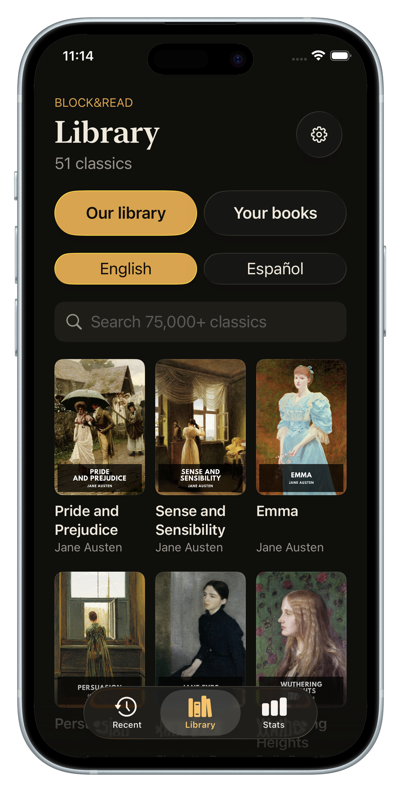
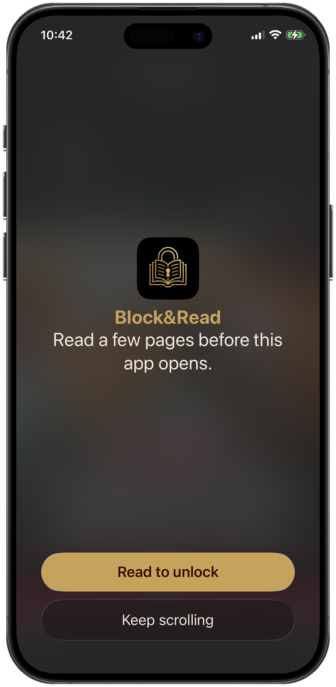
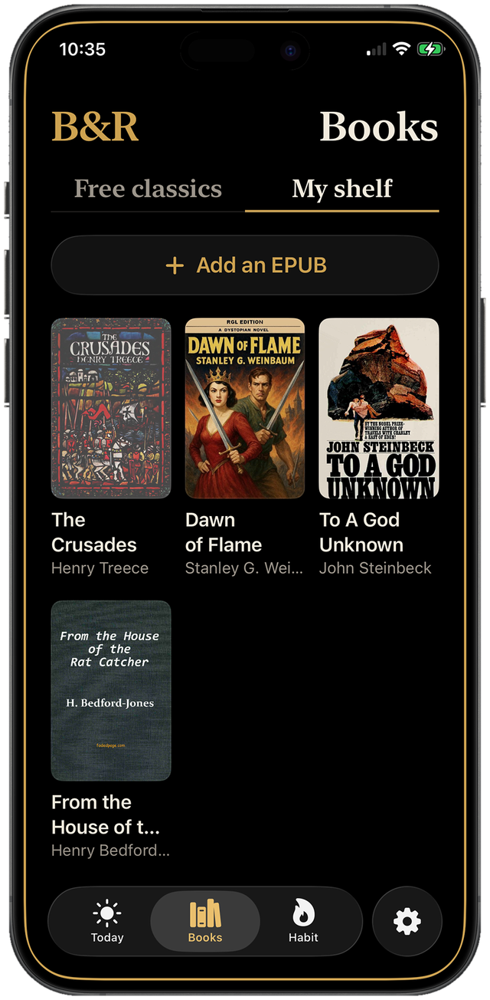
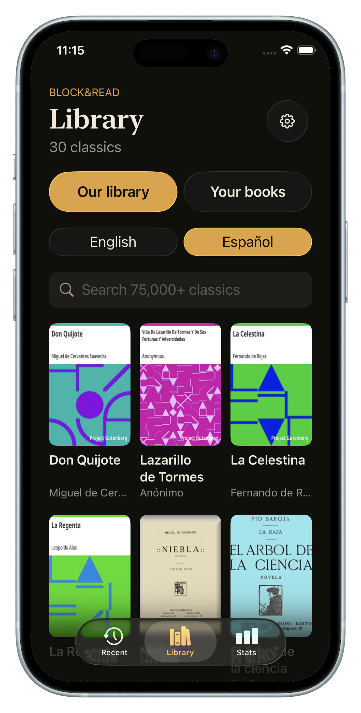

The app blocker that makes you read.El bloqueador de apps que te hace leer.
Reach for Instagram and a book appears instead. Read a few pages, and your apps unlock. No willpower required — just a page or two.Vas a abrir Instagram y aparece un libro. Lee unas páginas, y tus apps se desbloquean. No hace falta fuerza de voluntad — solo una página o dos.
Free to download · No accounts, no tracking · English & EspañolGratis · Sin cuentas ni rastreo · English & Español

Earn the scroll.Gánate el scroll.
Block&Read puts a book between you and the apps that eat your day. A page or two, and they open.Block&Read pone un libro entre tú y las apps que se comen tu día. Una página o dos, y se abren.
iPhone · iOS 26+ · Free: 2 blocked apps + classics shelf · Premium with free trialiPhone · iOS 26+ · Gratis: 2 apps bloqueadas + estante de clásicos · Premium con prueba gratis
Inside the AppDentro de la app
Block the apps. Read the books.Bloquea las apps. Lee los libros.
An app blocker and a beautiful e-reader in one — designed so the easiest thing on your phone is a book.Un bloqueador de apps y un lector hermoso en uno — diseñado para que lo más fácil de tu teléfono sea un libro.

Read to unlockLee para desbloquear
Reach for TikTok. Get Tolstoy.Buscas TikTok. Te encuentra Tolstói.
Pick the apps that eat your day. When you open one, Block&Read steps in with your current book. The scroll is still there — it's just on the other side of a few pages.Elige las apps que se comen tu día. Cuando abres una, Block&Read aparece con tu libro actual. El scroll sigue ahí — solo que del otro lado de unas páginas.
How to block apps on iPhone →Cómo bloquear apps en iPhone →
Daily goalMeta diaria
Finish the pages. Unlock the world.Termina las páginas. Desbloquea el mundo.
Set a daily goal you can actually keep — even five pages works. Hit it, and every blocked app opens for the day. Miss it, and the books wait patiently.Ponte una meta diaria que puedas cumplir — con cinco páginas alcanza. Cúmplela y todas tus apps bloqueadas se abren por el día. Si no, los libros esperan pacientes.
Reduce screen time without deleting apps →Reduce el tiempo de pantalla sin borrar apps →
Your libraryTu biblioteca
A shelf of classics, ready to read.Un estante de clásicos, listos para leer.
Public-domain classics in English and Spanish, beautifully typeset and free. Premium adds search across 75,000+ classics — Austen to Cervantes, one tap away.Clásicos de dominio público en inglés y español, bellamente tipografiados y gratis. Premium agrega búsqueda entre 75.000+ clásicos — de Austen a Cervantes, a un toque.
Where to start with the classics →Por dónde empezar con los clásicos →
Your own booksTus propios libros
Bring your EPUBs. Keep them private.Trae tus EPUB. Mantenlos privados.
Import any EPUB and it joins your library — backed up to your own iCloud, never to our servers. Your current novel becomes the toll booth for your distractions.Importa cualquier EPUB y se suma a tu biblioteca — respaldada en tu propio iCloud, nunca en nuestros servidores. Tu novela actual se vuelve el peaje de tus distracciones.
The EPUB reader, explained →El lector EPUB, explicado →
The readerEl lector
Read anywhere. Distraction-free.Lee donde sea. Sin distracciones.
Light, sepia and dark themes, adjustable text, and your exact page waiting for you. A reader made for the night — no notifications, no feed, no noise.Temas claro, sepia y oscuro, texto ajustable y tu página exacta esperándote. Un lector hecho para la noche — sin notificaciones, sin feed, sin ruido.
Rebuild your reading attention span →Recupera tu capacidad de atención →
Streaks & statsRachas y estadísticas
Watch your reading streak grow.Mira crecer tu racha de lectura.
Pages read, time won back, books finished, apps blocked — your progress at a glance, and a streak you won't want to break.Páginas leídas, tiempo recuperado, libros terminados, apps bloqueadas — tu progreso de un vistazo, y una racha que no vas a querer romper.
Build a daily reading habit →Crea un hábito de lectura diario →
English & Español
Classics in two languages.Clásicos en dos idiomas.
A dedicated Spanish shelf — Don Quijote, La Celestina, Lazarillo de Tormes — beside the English one. Read in your language, or use the blocker to finally practice the other.Un estante dedicado en español — Don Quijote, La Celestina, Lazarillo de Tormes — junto al de inglés. Lee en tu idioma, o usa el bloqueador para practicar el otro.
How to read more books →Cómo leer más libros →How it worksCómo funciona
Four steps. Zero willpower.Cuatro pasos. Cero fuerza de voluntad.
The habit you already have — reaching for your phone — becomes the trigger for the habit you want.El hábito que ya tienes — agarrar el teléfono — se convierte en el disparador del hábito que quieres.
Pick your appsElige tus apps
Choose the apps that eat your time — Instagram, TikTok, whatever pulls you in.Elige las apps que se comen tu tiempo — Instagram, TikTok, lo que te atrape.
Open oneAbre una
A book takes its place. Your current page, right where you left it.Un libro toma su lugar. Tu página actual, justo donde la dejaste.
Read to your goalLee hasta tu meta
A few pages is enough. Hit your daily goal and your apps open.Con unas páginas alcanza. Cumple tu meta diaria y tus apps se abren.
Build the streakCrea la racha
Streaks, stats and gentle reminders keep you coming back to the page.Rachas, estadísticas y recordatorios amables te hacen volver a la página.
GuidesGuías
Win your attention back.Recupera tu atención.
Practical guides on screen time, focus and reading more — and how to put Block&Read to work on each one.Guías prácticas (en inglés) sobre tiempo de pantalla, foco y cómo leer más — y cómo usar Block&Read en cada una.
Why App Blockers Fail (and What Works Instead)
Blocking creates a void, and the void loses to boredom every time. Replacement beats restriction.
Read the guideLeer la guía Screen TimeHow to Reduce Screen Time Without Deleting Your Apps
You don't need to quit your phone. You need to make the good thing easier than the bad thing.
Read the guideLeer la guía ReadingHow to Read More Books With the Time You Already Have
You read for hours every day — just not books. How to redirect the scroll into chapters.
Read the guideLeer la guía DistractionHow to Stop Doomscrolling (Without Throwing Your Phone Away)
The scroll is a slot machine. Here's how to swap the payout for pages.
Read the guideLeer la guía EPUB ReaderA Free EPUB Reader for iPhone That Blocks Your Apps
Import your own books, read distraction-free, and let your library guard your attention.
Read the guideLeer la guía StudyHow to Study Without Your Phone Pulling You Away
Blocking during study sessions, and turning course reading into the key that unlocks your breaks.
Read the guideLeer la guíaFAQ
Questions, answered.Preguntas, respondidas.
What is Block&Read?¿Qué es Block&Read?
How does read-to-unlock work?¿Cómo funciona «leer para desbloquear»?
Which apps can I block?¿Qué apps puedo bloquear?
What is Strict Mode?¿Qué es el Modo Estricto?
Can I import my own EPUB books?¿Puedo importar mis propios libros EPUB?
What books are included for free?¿Qué libros vienen gratis?
Does Block&Read track my data?¿Block&Read rastrea mis datos?
How much does Block&Read cost?¿Cuánto cuesta Block&Read?
Can Block&Read reduce my screen time?¿Puede reducir mi tiempo de pantalla?
Does it work for studying?¿Sirve para estudiar?
Is Block&Read available in Spanish?¿Está disponible en español?
Earn the scroll.Gánate el scroll.
Your apps aren't going anywhere. Neither are the books. The only question is which one opens first.Tus apps no se van a ninguna parte. Los libros tampoco. La única pregunta es cuál se abre primero.
Download on theDescargar en elApp StoreFree to download · No ads, no accounts, no trackingGratis · Sin anuncios, sin cuentas, sin rastreo